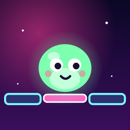

Glimmy Bridge
¡Tapa las grietas y salva a los Glimmies!
Plug the cracks, save the Glimmies!
Soporte
¿Tienes un problema, una duda o una idea? Escríbenos a cidenaris@gmail.com. Si puedes, indica tu modelo de móvil y la versión del juego (la verás en Ajustes).
Preguntas frecuentes
- He cambiado de móvil o reinstalado el juego y no tengo mis compras. Ve a Ajustes → Restaurar compras (o Tienda → Packs → Restaurar compras) con la misma cuenta de Apple o Google con la que compraste. Se recuperan las compras no consumibles: Sin anuncios, mundos y gorros exclusivos.
- ¿Dónde se guarda mi progreso? En tu dispositivo. No hace falta cuenta. Si desinstalas el juego, el progreso se borra.
- He comprado “Sin anuncios” y veo anuncios con recompensa. Es normal: “Sin anuncios” quita los anuncios que salen solos entre partidas. Los de recompensa (revivir, x2 monedas…) son opcionales y solo aparecen si tú los pides.
- ¿Cómo cambio mi elección sobre los anuncios personalizados? En Ajustes → Opciones de privacidad y anuncios.
- Quiero un reembolso. Los pagos los gestionan Apple y Google: pídelo desde reportaproblem.apple.com o desde tu historial de pedidos de Google Play.
Support
Got a problem, a question or an idea? Write to cidenaris@gmail.com. If you can, include your phone model and the game version (shown in Settings).
FAQ
- I changed phones or reinstalled and my purchases are gone. Go to Settings → Restore purchases (or Shop → Packs → Restore purchases) with the same Apple or Google account you bought with. Non-consumable purchases come back: No Ads, exclusive worlds and hats.
- Where is my progress saved? On your device. No account needed. Uninstalling the game deletes it.
- I bought “No Ads” but I see rewarded ads. That's expected: “No Ads” removes the ads that show up on their own between games. Rewarded ads (revive, x2 coins…) are optional and only appear when you ask for them.
- How do I change my personalised ads choice? In Settings → Privacy & ad options.
- I want a refund. Payments are handled by Apple and Google: request it at reportaproblem.apple.com or from your Google Play order history.